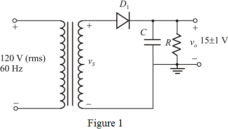

Step 1:
(a)
The half wave rectifier is shown in Figure 1.

Step 2:
The average dc output voltage is 
The allowed ripple voltage is
Calculate the maximum peak voltage by adding 

Therefore, calculate peak voltage across secondary winding of the transformer.
Thus, the secondary winding peak voltage of the transformer, is .
Calculate the rms voltage across entire secondary winding.
Thus, the rms voltage that must appear across the secondary winding is .
Step 3:
(b)
Write the expression for ripple voltage and calculate it.
Rearrange the terms for 
Therefore, the required value of filter capacitor  is .
is .
Step 4:
(c)
The maximum reverse voltage appears across the diode, when the secondary voltage is at its negative peak.
Calculate the maximum reverse voltage.
Therefore, the maximum reverse voltage  is .
is .
Find the average output voltage.
Find the peak inverse voltage.
Therefore, peak inverse voltage of the diode is, .
Using the safety factor , calculate the peak inverse voltage for the diode.
Therefore, the peak inverse voltage using safety factor is .
Step 5:
(d)
Write the expression for average diode current  .
.
The accuracy of the result can be improved by taking the diode voltage drop into account.
Substitute 15 V for ,  for
for  , 16.7 V for
, 16.7 V for  , and for
, and for  .
.
Therefore, the average diode current is .
Step 6:
(e)
Write the expression for peak diode current .
The accuracy of the result can be improved by taking the diode voltage drop into account.
Substitute 15 V for  ,
,  for
for  , 16.7 V for
, 16.7 V for  , and
, and  for
for  .
.
Therefore, the peak diode current, is .